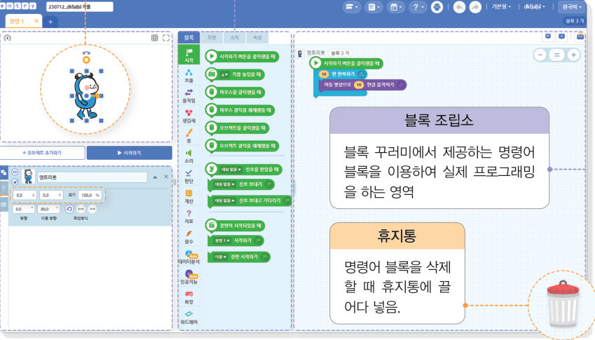

자주 쓰는 코드는 함수로 묶어 이름을 붙이고 필요할 때 부른다. 인자 값과 결괏값에 따라 네 가지 함수를 호출해 보고, 오류가 숨어 있는 프로그램을 실행해 버그를 찾아 고친 뒤, 두 명이 함께하는 공 피하기 게임을 디버깅해 보자.
함수는 특정 작업을 수행하기 위해 모아 놓은 프로그램 코드의 집합으로, 같은 작업을 반복할 때 함수로 정의한 후 필요한 곳에서 호출하여 사용한다. 반복되는 기능을 함수로 정의해 놓으면 코드를 최적화할 수 있고, 기능에 문제가 생겼을 때 오류를 쉽게 수정할 수 있다.
| 스페이스 바 또는 엔터를 누르면 점프하기 | |
| x 키는 짧은 점프하기, c 키는 긴 점프하기 | |
| 인사말 무작위로 출력하기 | |
| 입력받은 두 수 중 큰 값을 결괏값으로 보내기 |
프로그램의 오류를 찾아내어 수정하는 과정을 디버깅이라고 한다. 만약 오류가 발견되었을 때 수정하지 않으면 프로그램이 제대로 작동하지 않기 때문에 디버깅 과정은 매우 중요하다.
| 리스트 마지막 항목 삭제하기: 오브젝트를 누르면 경고 메시지와 함께 실행이 종료됨 | |
| 육각형 그리기: 육각형을 완성하지 못함 | |
| 홀수와 짝수의 합 구하기: 카운트 값이 증가하지 않아 홀수의 합에 1만 계속 더해짐 | |
| 방향 키로 좌우 이동: 오른쪽 화살표를 눌렀을 때 오른쪽으로 이동하지 않음 |
➊ 사람1은 a 키와 d 키로 좌우로 움직이며 s 키를 누르면 점프한다. ➋ 사람2는 j 키와 l 키로 좌우로 움직이며 k 키를 누르면 점프한다. 사람1과 사람2의 점프하기는 동일한 기능이므로 ‘점프하기’ 함수로 만든다. ➌ 공은 좌우로 계속 움직이며 사람1이나 사람2에 닿으면 게임이 종료된다.
| 특정 작업을 수행하기 위해 모아 놓은 프로그램 코드의 집합을 함수라고 한다. | |
| 프로그램의 오류를 찾아낼 때 사용하는 프로그램을 버그라고 한다. |
| 평가 기준 | 스스로 평가 |
|---|---|
| 함수와 디버거의 의미를 예를 들어 설명할 수 있는가? | |
| 함수를 이용한 프로그램을 작성하고 디버깅을 통해 오류를 수정할 수 있는가? |